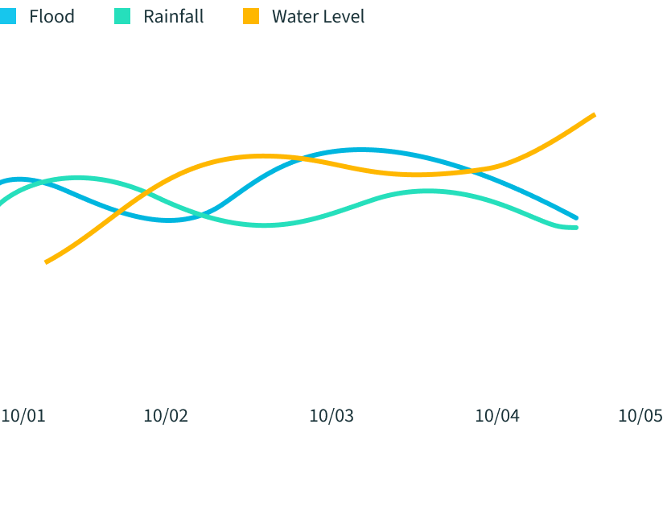

Monitoring water levels is crucial for predicting and managing natural events such as floods and droughts. This page provides real-time data and forecasts on water levels, rainfall, and the likelihood of floods and droughts. Stay informed and prepared by regularly checking the updates provided here.-
75%
25%
50 mm